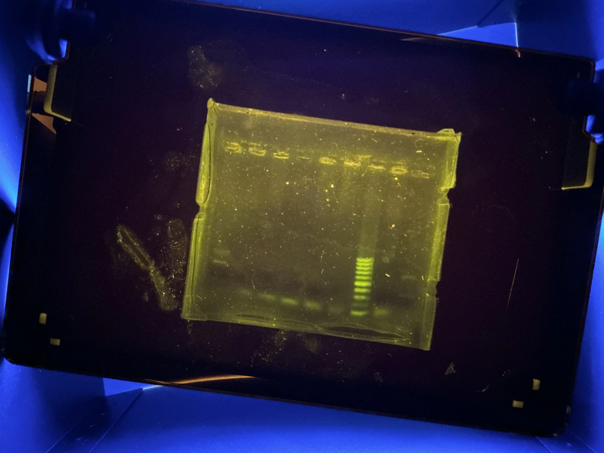

In our new media class, we did an experiment in which we took samples of our DNA from our mouth and put it in a tube, then a heat block, which heated to burst our cells to make our DNA available to compare with others.
We start by grabbing a toothpick and swabbing the side of our cheek to get cells. We add an extractor liquid so it will work in the PCR machine.
We took our DNA and added polymerase, which copies DNA and Primers, which is DNA that perfectly matches the beginning and end of the section we want to copy and doing that creates 1 billion copies of our DNA.
we poured gel into a mold, then we added our DNA. Then, we ran electricity to separate and measure based on size. Here is a picture of the mold under a special light that makes the DNA glow.

Finally, on Adobe Photoshop, we analyzed our DNA and measured it based on comparing it to a “ladder” which is DNA of a variety of different known sizes to match people.
Most of the results showed that most matches of DNA was with someone with a different race or ethnicity.
Here is a video displaying all the steps.